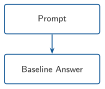
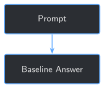

import sys
from pathlib import Path
BOOK_ROOT = Path(__file__).resolve().parents[2]
sys.path.insert(0, str(BOOK_ROOT / "code" / "chapter_01"))
sys.path.insert(0, str(BOOK_ROOT / "code" / "chapter_02"))
from build_training_examples import build_training_examples
from load_local_model import MODEL_NAME, generate_reply, load_model_and_tokenizer
def build_prompt(example: dict) -> str:
return f"{example['instruction']}\n{example['input']}"
examples = build_training_examples()
print(build_prompt(examples[0]))3 Baseline Prompting: What the Model Gets Wrong Before Fine-Tuning


Progress ███░░░░░░░░░░ 3 / 13 · Estimated time: 20-30 min · Difficulty: 🟢 Beginner
3.1 Learning objectives
By the end of this chapter, you will be able to:
- Turn Chapter 2’s training examples into a fixed batch of training baseline questions, with each example’s own
outputwithheld from the model - Run the unmodified base model against that exact batch and save its answers to a reusable results file
- Explain why a baseline must reuse the same prompts a later fine-tuned model will be tested on, not a different, looser sample
- Describe, from a real run against this book’s own archive, the specific way this base model fails when it isn’t given a report’s content — and why that’s different from wild hallucination
- Explain why a training baseline alone can’t prove fine-tuning generalizes, and why Chapter 5 needs a separate check against Chapter 2’s held-out report
3.2 Operational Problem
Sarah, the intervention engineer, is skeptical: “Before we spend any time fine-tuning this thing, how do we even know it’s wrong today? And once it’s fine-tuned, how do we prove it actually got better, instead of just feeling better?”
Chapter 1 showed the base model producing a fluent, generic answer with no report-specific detail. That was one question, read once, judged by eye. It’s not something you can compare against later, and it isn’t built from the same training examples Chapter 5 will actually fine-tune on. This chapter fixes both problems: it takes the exact instruction/input prompts Chapter 2 built, asks the base model every one of them with the real answer hidden, and saves the results to a file — a fixed, reproducible baseline Chapter 5’s fine-tuned model gets held against, not a vibe.
One caveat up front, because it matters for how you read Chapter 5’s result later: everything in this chapter runs on the same 16 examples Chapter 5 trains on. That makes it a training baseline, not a test of generalization — proof the model can learn these exact examples, not proof it learned anything beyond them. Chapter 2 reserved one report, Drilling_037, specifically so Chapter 5 has something the model genuinely never trained on to test against too.
3.3 Example baseline question
Chapter 2 turned report Drilling_038 (2020-11-26 — the stuck-pipe day from Chapter 1) into this training example:
NoteTraining example – from Chapter 2
{
"instruction": "What activity is planned next?",
"input": "Well: FORGE 16A [78]-32 | Report #38 | Date: 2020-11-26",
"output": "INSPECT BHA, TRIP IN HOLE DRILL CURVE"
}A training example and a baseline question are the same prompt used two different ways. Fine-tuning (Chapter 5) shows the model the output so it can learn from it. A baseline never does — this chapter sends the model only the instruction and input, then compares whatever it says back against the output it was never shown.
3.4 Theory
TipEngineering Translation: baseline
A baseline is a fixed, saved measurement taken before you change anything — like recording a well’s pressure before an intervention, so you have something concrete to compare the after-reading against. A baseline you can’t reproduce, or that used different questions each time, isn’t useful for that comparison.
TipEngineering Translation: exact-match scoring
This chapter’s matched_expected check asks one narrow question: does the model’s answer contain the report’s exact expected value, word for word? It’s the simplest possible scoring rule — strict enough to never give false credit, but too strict to reward an answer that’s correct in substance but phrased differently. Chapter 11 builds a more forgiving evaluation harness; this chapter deliberately starts with the crude, honest version.
3.5 Why not just eyeball a few answers?
A tempting shortcut: run the model on two or three questions, read the replies, and decide informally whether it “seems okay.” That’s exactly what Chapter 1 did, and it doesn’t scale into evidence. You can’t compare “seemed okay” across a before-and-after fine-tune, you can’t tell whether one lucky answer is representative of the other seventeen, and you have nothing saved to point to later if someone asks how you know fine-tuning helped.
This chapter’s harness fixes all three: the same 16 training questions, every time; every answer saved to datasets/training_examples/training_baseline_results.jsonl; and a single number — how many answers contained the report’s actual value — that Chapter 5 can reproduce and compare against after fine-tuning.
3.6 When fine-tuning is, and is not, the right tool
Every question this chapter asks has the same shape: “what does this specific report say?” — a fact lookup. That’s a deliberate, narrow choice (Chapter 2 explains why), but it’s worth being honest about what it does and doesn’t tell you about fine-tuning in general, before Chapter 5 spends real time on it.
Fine-tuning (Chapter 5 onward) is genuinely good at:
- Teaching a model your operation’s vocabulary and shorthand (the
POOH/BHA-style terms Chapter 4 tests directly) - Adapting its writing style to match how your reports are actually written, instead of a generic assistant’s voice
- Replacing vague, generic-sounding answers with ones that reflect your domain’s actual patterns and judgment calls
- Making “did this get better?” measurable and reproducible, which is the entire point of this chapter’s harness
It is a weaker tool for:
- Recalling one specific fact from one specific report it may or may not have trained on — memorizing 16 answers is not the same as building a lookup system, and Chapter 5 shows exactly where that distinction breaks down
- Citing which source document an answer came from — a fine-tuned model’s weights don’t carry provenance
- Replacing a proper document search / retrieval system for questions that span reports it never trained on
- Proving anything about generalization from a small training set on its own — that claim needs a held-out check, not just a lower loss number
This book starts with fine-tuning anyway, because teaching the model your domain is a real, necessary step even for a system that will later add retrieval on top of it. Chapter 9 is where those two techniques combine — fine-tuning for how your operation talks and reasons, retrieval for grounding answers in a specific, citable report. Neither replaces the other; Chapter 5’s own results are the concrete evidence for why.
3.7 Implementation
3.7.1 Step 1: Turn Chapter 2’s training examples into baseline questions
3.8 What problem are we solving?
Each Chapter 2 training example is a dictionary with instruction, input, and output. A baseline question is just the first two, joined into the single string the model actually receives — the output must never appear in it, or the test proves nothing.
3.9 Inputs
- One training example (as built by
build_training_examples()in Chapter 2)
3.10 Expected Output
A plain-text prompt string, with no trace of the expected answer.
Running this exact code prints:
What are the present operations reported on this well?
Well: FORGE 16A [78]-32 | Report #3 | Date: 2020-10-223.11 What just happened?
build_prompt concatenates instruction and input with a newline — nothing more. build_training_examples() is the exact same function Chapter 2 uses to build the training set, imported directly rather than copied, so this chapter’s questions are guaranteed to be the same ones Chapter 5 eventually trains on.
3.12 Production Reality
Every one of these questions only ever gives the model the report’s metadata — well name, report number, date — never the report’s actual text. That’s deliberate: it isolates exactly what fine-tuning is for (Chapter 5 bakes each report’s specific facts into the model’s weights, so it no longer needs the text handed to it). A separate, equally valid question — can the model answer correctly when it is given the report text? — is this chapter’s challenge exercise, and it previews why Chapter 9 eventually combines fine-tuning with retrieval instead of picking one or the other.
3.13 What problem are we solving?
For one baseline question, get the base model’s answer and check it against the report’s real value — the smallest unit of this chapter’s harness.
3.14 Inputs
- The loaded
modelandtokenizerfrom Chapter 1 - One training example
3.15 Expected Output
A dictionary recording the question, the hidden expected answer, the model’s actual answer, and whether they matched.
def ask_baseline(model, tokenizer, example: dict, max_new_tokens: int = 60) -> dict:
prompt = build_prompt(example)
answer = generate_reply(model, tokenizer, prompt, max_new_tokens=max_new_tokens)
expected = example["output"]
return {
"instruction": example["instruction"],
"input": example["input"],
"expected": expected,
"base_model_answer": answer,
"matched_expected": expected.strip().lower() in answer.strip().lower(),
}
model, tokenizer = load_model_and_tokenizer(MODEL_NAME)
print(ask_baseline(model, tokenizer, examples[0]))Running this exact code prints:
{
"instruction": "What are the present operations reported on this well?",
"input": "Well: FORGE 16A [78]-32 | Report #3 | Date: 2020-10-22",
"expected": "RIGGING UP WITH FRONTIER CREWS AND SUPERVISION AND JW JONES TRUCKING",
"base_model_answer": "The report you've provided appears to be for a well called \"FORGE 16A [78]-32\" and it is dated October 22, 2020. The specific details of what operations were reported are not explicitly stated in your message. However, based",
"matched_expected": false
}3.16 What just happened?
The model was asked exactly what Chapter 2’s input field contains — well name, report number, date — and nothing else. It answers honestly that “the specific details… are not explicitly stated,” rather than inventing a plausible-sounding operation. That’s a meaningfully better failure than confident fabrication would be, but it’s still a failure: the harness needed the report’s real value, and didn’t get it.
3.17 Production Reality
max_new_tokens=60 caps the reply short on purpose, so this chapter’s 16-question run finishes in a couple of minutes on CPU. A shorter cap also means some replies (like the one above) get cut off mid-sentence rather than reaching a natural stopping point — acceptable here because matched_expected only checks for the report’s specific value, which would appear (or not) well before token 60 in every one of this archive’s short, single-line field outputs.
3.17.1 Step 3: Run the full training baseline and save it for Chapter 5
3.18 What problem are we solving?
One question proves the harness works. Chapter 5 needs all 16, saved somewhere it can load without re-running the base model.
3.19 Inputs
- Every training example from
build_training_examples()
3.20 Expected Output
A summary line reporting how many of the 16 answers matched, and a saved .jsonl file with one result per question.
import json
TRAINING_BASELINE_OUTPUT_PATH = BOOK_ROOT / "datasets" / "training_examples" / "training_baseline_results.jsonl"
def run_baseline(model, tokenizer, examples: list[dict]) -> list[dict]:
return [ask_baseline(model, tokenizer, example) for example in examples]
def save_results_jsonl(results: list[dict], output_path: Path = TRAINING_BASELINE_OUTPUT_PATH) -> None:
output_path.parent.mkdir(parents=True, exist_ok=True)
with output_path.open("w", encoding="utf-8") as f:
for result in results:
f.write(json.dumps(result) + "\n")
results = run_baseline(model, tokenizer, examples)
save_results_jsonl(results)
matched = sum(r["matched_expected"] for r in results)
print(f"Training baseline: {matched}/{len(results)} answers contained the report's actual value verbatim")
print(f"Saved -> {TRAINING_BASELINE_OUTPUT_PATH}")Running this exact code prints:
Training baseline: 0/16 answers contained the report's actual value verbatim
Saved -> datasets/training_examples/training_baseline_results.jsonl3.21 What just happened?
Every one of the 16 questions built from the 8 recognized, non-held-out sample reports came back with matched_expected: false. Not one exact number, status, or operation name from the archive appears in any answer — because the model was never given any of them, and it has no other way to know which specific well this is. 0/16 is this chapter’s training baseline. Chapter 5 reruns this exact harness against the fine-tuned model and compares its score directly against this one — but that comparison alone only shows training recall. See below.
3.22 Training recall vs. generalization
A 0/16 baseline is easy to beat: fine-tune on these same 16 examples, rerun this harness, and the score will very likely improve — a small model with a handful of LoRA-adjustable parameters (Chapter 5) can often just memorize 16 short flashcards. That improvement would be real, but it would only prove the model learned these exact examples, not that it learned anything that transfers to a report it has never seen.
That’s exactly why Chapter 2 reserved Drilling_037 out of training entirely. Chapter 5 has to report two separate numbers, not one: training-set recall on these 16 examples, and a held-out generalization score on Drilling_037’s own 2 examples — a report the fine-tuned model never trained on. Only the second number is evidence of learning that generalizes; the first is evidence of memorization capacity. Neither number alone tells the full story, and Chapter 11 later replaces this one-report check with a proper evaluation harness — but even a single honest held-out report beats zero.
3.23 Practical exercise
🟢 Beginner
Try it yourself: run python code/chapter_03/baseline_prompting.py from inside book/, then open datasets/training_examples/training_baseline_results.jsonl and read through all 16 answers.
You’ll know it worked when: the script prints Training baseline: 0/16, the file has exactly 16 lines, none of the model’s answers contain a specific operation, status, or number from the actual report (most will instead say something like “not explicitly stated”), and no line mentions Report #37 — that report is reserved, not tested here.
3.24 Field notes
WarningField notes: the model invents the wrong kind of document
Query: report #49’s “What activity is planned next?” question — the same fishing-operations report referenced in Chapter 2’s Field notes.
Result: “The text you provided appears to be from an online forum or discussion board where someone has posted their progress on a project called ‘FORGE 16A’ with the report number #49 and the date of December 7, 2020. Without more context about what this refers…”
Why: report #49’s real activity_planned value is "FISHING OPERATIONS" — the model was never given that, only the metadata string "Well: FORGE 16A [78]-32 | Report #49 | Date: 2020-12-07". Rather than guess at an oilfield operation, it guesses at what kind of document would contain a bare project name and report number — and lands on “an online forum or discussion board post,” which is a reasonable guess for generic internet text and a completely wrong one for a daily drilling report.
Lesson: this base model doesn’t just lack this well’s facts — it doesn’t yet recognize the shape of the document it’s being asked about. That’s a second, deeper gap fine-tuning has to close, beyond memorizing individual report values.
3.25 Challenge exercise
🟠 Intermediate
Challenge: baseline_prompting.py only ever gives the model each report’s metadata, never its actual text — so 0/16 mostly proves the model has no way to know the answer, not that fine-tuning is the only possible fix. Extend the harness to include each report’s full extracted text (from Chapter 2’s extract_text()) alongside the question, and re-measure the match rate. A reference solution is at code/chapter_03/challenge/challenge.py — on a real run, it scores 6/16, up from 0/16, but still well short of perfect: even reading the report directly, this small base model doesn’t reliably reproduce its exact wording. Keep that number in mind for Chapter 9, which combines fine-tuning with exactly this kind of retrieved context.
3.26 Key takeaways
- A baseline is only useful if it’s fixed and reproducible: same questions, same withheld answers, saved results, every time.
- This chapter’s training baseline questions are Chapter 2’s real training examples, with the
outputwithheld — not a separate, invented test set. - On this book’s sample archive, the unmodified base model scores
0/16on exact-match — not because it hallucinates wildly, but because it correctly (and unhelpfully) admits it wasn’t given the report’s content. - A training baseline only measures memorization capacity. Proving fine-tuning generalizes needs a separate score on data the model never trained on — Chapter 2’s held-out report,
Drilling_037, exists for exactly that reason, and Chapter 5 reports both numbers. matched_expectedis a deliberately crude, honest scoring rule. Chapter 11 builds something more forgiving; this chapter’s harness exists so there’s a saved, comparable number to build on.
3.27 Repository files
| File | Purpose |
|---|---|
code/chapter_03/baseline_prompting.py |
Builds training baseline questions from Chapter 2’s training examples, runs the base model, saves results |
code/chapter_03/challenge/challenge.py |
Reference solution: re-runs the same questions with each report’s full text included |
datasets/training_examples/training_baseline_results.jsonl |
Generated output (not committed — regenerate by running the script) |
notebooks/chapter_03_explore.ipynb |
Interactive companion notebook |
CautionCHECKPOINT — Chapter 3
Tip✓ WHAT YOU BUILT
baseline_prompting.py — runs the unmodified base model against Chapter 2’s 16 training examples with every answer hidden, and saves the results to datasets/training_examples/training_baseline_results.jsonl. Chapter 5 reruns this same harness against the fine-tuned model for a training-recall comparison, and runs a second, separate check against the held-out report for a generalization comparison.
3.28 What can you do now that you couldn’t do before?
You can produce a fixed, reproducible number for exactly how well the base model performs on your own training questions — something to point to, not just a feeling — and you have it saved to a file Chapter 5 will compare against directly. You can also tell the difference between “the model learned its training set” and “the model generalizes,” and you know which one this chapter’s number actually proves.
3.29 Suggested next step
Coming up in Chapter 4: fine-tuning (Chapter 5) works by adjusting how the model represents text internally — but “text” isn’t what a model actually reads. Chapter 4 opens up tokenization and embeddings, the layer underneath every prompt this chapter sent, so LoRA fine-tuning doesn’t feel like a black box when you get there. Chapter 5 then reruns this chapter’s training baseline against the fine-tuned model, and runs its held-out counterpart against Drilling_037 for the first time.